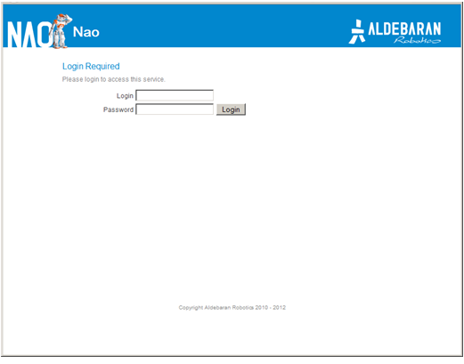
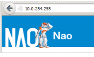
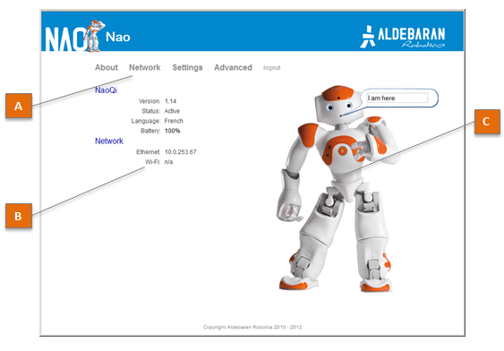
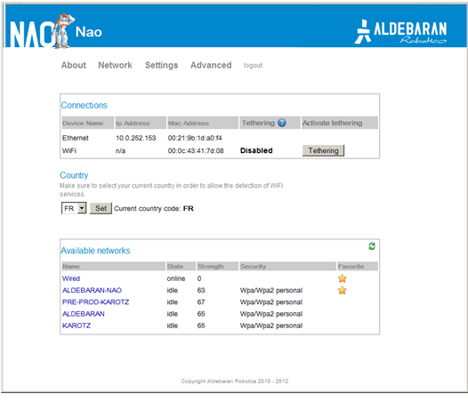
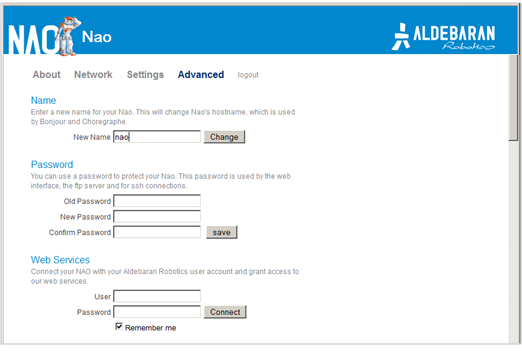

NAO Web page¶
What is NAO Web page¶
How to access the NAO Web page¶
| Step | Action |
|---|---|
Access to NAO’s Web page, using one of the following method: The screen below is displayed.  |
|
Complete Login and Password fields and click the Login button. The default value is nao, for both login and password.
If you have lost your password, see: Lost your password.
For technical information about login and password, see: User accounts.
|
Using IP address¶
| Step | Action |
|---|---|
Press on NAO Chest button. NAO says the four numbers of its IP address. |
|
| Note them. | |
| Open a web browser and enter that IP address in the address bar. |
An IP address is four numbers (from 0 to 255) separated by periods, like this:
Using NAO’s name¶
| Step | Action |
|---|---|
| Open a web browser. | |
If you know NAO’s host name:
If you don’t know NAO’s host name:
|
Bonjour is conceived by Apple and installed by default on Mac OS X and Linux (Avahi) computers. On Windows, it is automatically installed during the Choregraphe installation process.
For all information about Bonjour, including licensing, please visit the official http://support.apple.com/kb/DL999.
Using Choregraphe¶
| Step | Action |
|---|---|
| Launch Choregraphe. | |
Choose Connection > Connect to or Click the The connection widget is displayed. 
|
|
| Right-click the green NAO and choose View web page. |
 Connect to button.
Connect to button.Lost your password¶
If you have defined then lost the password for the web interface:
- Reset the settings of the robot using the NAOFlasher with a Factory reset option.
Discovering NAO Web page¶
Home page¶
| Part | Name | Description |
|---|---|---|
| A | Menu |
|
| B | Key information | Displays a short summary of NAO’s system. Click the information to quickly access the corresponding detailed page. |
| C | NAO’s picture | Not sure to be connected to the correct robot? Make him say a short sentence.
|
Network¶
The table below lists the information displayed by Network screen.
| Name | Displays ... |
|---|---|
| Connections | Address and Mac Address of the Wired and Wireless connections currently used. Tethering button allows you to activate an advanced feature. For further details see: NAO as a mobile WiFi Access Point. |
| Country | the current country used for WiFi service detection. |
| Available networks | the list of available networks, Wired and Wireless. To configure a new connection:
|
Settings¶
List of settings
| Settings | Description | See also |
|---|---|---|
| Name | NAO host name. Make sure your NAO has a unique name when joining a community. | |
| Password | For this Web page, but also ftp and ssh connections. | User accounts, FTP Access, Accessing NAO over ssh. |
| Web Services | Allows you to associate your NAO with an authorized Aldebaran Robotics user account only. | Aldebaran Robotics Web Services |
| NAO’s buddy icon | The buddy icon or avatar used to represent your robot. | Connection widget |
| Language | Sets NAO language for speech synthesis and recognition. | |
| Time Zone | Important for the robot to know what time it is. | |
| Volume | Sets the volume of NAO Loudspeakers. | How to set NAO’s volume, Loudspeakers. |
| Fall Manager reflex | Permit deactivation of the fall manager reflex. | Fall manager |
| Issue Reporting | When enabled, issue reports are automatically sent to Aldebaran Robotics and then deleted from the robot at boot time. | How to retrieve an issue report |
| Remote Controls | Allows to configure Infra-Red interaction with an external IR device. | Set a remote control |
Advanced¶
| Settings | Description | See also |
|---|---|---|
| Naoqi | Allows you to start, stop or restart NAOqi, and to visualize currently running modules. | Monitoring NAOqi on the robot |
| Packages | Displays the packages currently uploaded. | |
| Memory | Allows you to search for any memory key in order to check is current value. | ALMemory |
| Process | Displays the processes currently running. | |
| Hardware | Displays useful information about Devices, Joints, Configurations and Temperatures. |